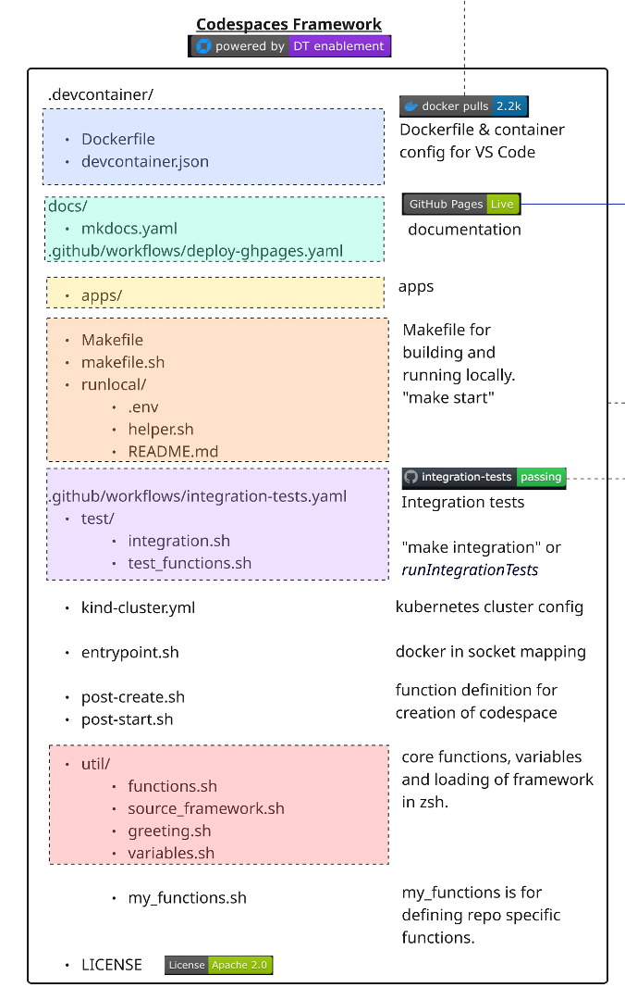
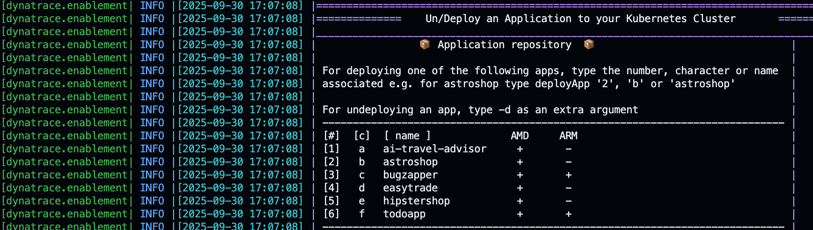

6. The Framework

This section outlines the structure and purpose of each component in the Codespaces Enablement Framework, as visualized in the architecture diagram.🏗️ Versioned Pull Model#
The framework uses a versioned cache model where consumer repos pull framework files at runtime instead of storing them locally. Each repo pins a FRAMEWORK_VERSION and only keeps custom files.
How the Cache Works#
When a container starts, source_framework.sh resolves framework files through a three-tier cache:
- Container cache (
$HOME/.cache/dt-framework/<version>/) — fastest, lost on rebuild - Host cache (
.devcontainer/.cache/dt-framework/<version>/) — persists across rebuilds - Git clone — fallback, clones from
codespaces-frameworkat the pinned tag via sparse-checkout
source_framework.sh
├── DEV MODE (functions.sh exists locally) → source directly
└── CACHE MODE (consumer repos)
├── Tier 1: Container cache hit → source from cache
├── Tier 2: Host cache hit → copy to container, source
└── Tier 3: git clone --sparse → populate both caches, source
File Classification#
Files in .devcontainer/ are classified into categories that determine how the framework manages them:
Category A — Framework-owned (removed from repos, pulled from cache)#
| File | Purpose |
|---|---|
util/functions.sh |
Core framework functions (1800+ lines) |
util/variables.sh |
Global variables, colors, port ranges |
util/greeting.sh |
Terminal welcome message |
util/test_functions.sh |
Test assertion functions |
makefile.sh |
Docker build/run logic for local development |
runlocal/helper.sh |
ENV file loader, repo name resolver |
Dockerfile |
Base image build (consumers pull pre-built image) |
entrypoint.sh |
Docker socket GID mapping |
kind-cluster.yml |
Legacy location (moved to yaml/kind/) |
apps/ |
Demo applications (astroshop, todo-app, etc.) |
p10k/ |
PowerLevel10k zsh theme config |
yaml/ |
Dynakube manifests, Kind cluster config |
Category B — Thin wrappers (replaced during migration)#
| File | Purpose |
|---|---|
Makefile |
Bootstraps cache, delegates to cached makefile.sh |
Custom files — Repo-specific (never removed)#
| File | Purpose |
|---|---|
devcontainer.json |
Container config (image, runArgs, secrets) |
post-create.sh |
Repo-specific setup automation |
post-start.sh |
Repo-specific post-start actions |
util/source_framework.sh |
Version pin + cache logic |
util/my_functions.sh |
Repo-specific custom functions |
test/integration.sh |
Repo-specific integration tests |
.env |
Secrets for local runs and MCP (gitignored) |
manifests/ |
Repo-specific K8s manifests |
Image Tiers#
Defined per repo in repos.yaml via the image_tier field:
| Tier | Description | Default |
|---|---|---|
minimal |
Core framework only | — |
k8s |
Core + Kind cluster, entrypoint, Dynakube yaml | ✅ |
ai |
Same as k8s (extensible for future AI-specific files) | — |
After Migration — Clean Repo Structure#
.devcontainer/
devcontainer.json # Container config
.env # Secrets (gitignored)
post-create.sh # Repo-specific setup
post-start.sh # Repo-specific post-start
Makefile # Thin wrapper → delegates to cache
.cache/ # Framework cache (gitignored)
util/
source_framework.sh # Version pin + cache mechanism
my_functions.sh # Custom functions
test/
integration.sh # Repo-specific integration tests
manifests/ # Repo-specific K8s manifests (if any)
Everything else comes from the framework cache at the pinned FRAMEWORK_VERSION.
🟦 Container Configuration#
Defines the development container for VS Code and Codespaces.
- devcontainer.json: Main configuration file. Defines the pre-built image (
shinojosa/dt-enablement), runtime arguments, volume mounts, lifecycle hooks, and secrets. Extensions are kept empty to ensure portability across platforms (ARM and AMD). .env: Secrets and environment variables for local runs and MCP server. Located at.devcontainer/.env(gitignored). Used by all instantiation types: Codespaces reads from GitHub secrets, VS Code/Docker reads from this file.
🟩 Documentation Workflow (docs/)#
- docs/: Contains all documentation and site configuration.
- mkdocs.yaml: Per-repo config using
INHERIT: mkdocs-base.yamlto inherit the framework's base theme, extensions, and plugins. Only repo-specific fields (site_name, nav, RUM snippet) are defined here. - mkdocs-base.yaml: Framework-owned base configuration (Material theme, deep-purple palette, markdown extensions). Fetched at runtime by CI workflows at the repo's
FRAMEWORK_VERSIONtag. - .github/workflows/deploy-ghpages.yaml: GitHub Actions workflow to deploy documentation to GitHub Pages when a PR is merged into main.
Live Documentation#
- installMkdocs: Installs all requirements for MkDocs (including Python dependencies from
docs/requirements/requirements-mkdocs.txt) and exposes the documentation locally. - exposeMkdocs: Launches the MkDocs development server on port 8000 inside your dev container.
Deploying to GitHub Pages#
- deployGhdocs: Builds and deploys the documentation to GitHub Pages using
mkdocs gh-deploy.
🟨 App Repository (apps/)#
This directory contains the application code and sample apps. Each app has its own subfolder inside apps/ in the framework cache.
Port Allocation and NodePort Strategy#
When deploying applications, the framework automatically allocates ports using the NodePort strategy. The getNextFreeAppPort function selects an available port from the defined range:
PORTS=("30100" "30200" "30300")
Managing Apps with deployApps#
The deployApps function deploys and undeploys applications to your Kubernetes cluster:

To deploy an app#
deployApps 2 # by number
deployApps b # by character
deployApps astroshop # by name
To undeploy an app#
deployApps 2 -d
deployApps astroshop -d
🟧 Running Locally#
To quickly start a local development container:
cd .devcontainer
make start
The thin Makefile bootstraps the framework cache (if missing) and delegates to the cached makefile.sh. Available targets:
| Target | Description |
|---|---|
make start |
Build if needed, run or attach to container |
make build |
Build Docker image |
make build-nocache |
Full rebuild without cache |
make buildx |
Multi-arch build (amd64/arm64) with push |
make integration |
Run integration tests in container |
make clean-cache |
Clear the framework cache |
make clean-start |
Kill containers, clear cache, fresh start |
The Makefile generates a cached_makefile.sh wrapper during bootstrap that correctly sets ENV_FILE, RepositoryName, and VOLUMEMOUNTS to point to the repo (not the cache), ensuring backward compatibility with any cached framework version.
🟪 GitHub Actions & Integration Tests#
Automation for CI/CD and integration testing:
- .github/workflows/integration-tests.yaml: Runs integration tests on every PR. The
mainbranch is protected — tests must pass before merging. - test/integration.sh: Repo-specific test runner. Loads the framework, then runs assertions.
Integration Test Function#
- runIntegrationTests: Triggers integration tests by running the repo's
test/integration.shscript.
| integration.sh | |
|---|---|
1 2 3 4 5 6 7 8 9 10 | |
These assertions check that required pods are running and the application is accessible. If any assertion fails, the PR is blocked from merging.
🟫 Kubernetes Cluster#
The Kubernetes cluster is defined in yaml/kind/kind-cluster.yml. Kind (Kubernetes IN Docker) spins up a local cluster using the Docker-in-socket strategy.
Managing the Kind Cluster#
| Function | Description |
|---|---|
startKindCluster |
Start, attach, or create the Kind cluster |
attachKindCluster |
Attach to a running cluster (configure kubeconfig) |
createKindCluster |
Create a new cluster from yaml/kind/kind-cluster.yml |
stopKindCluster |
Stop the Kind cluster container |
deleteKindCluster |
Delete the cluster and all resources |
The kubectl client, helm, and k9s are automatically configured to work with the Kind cluster.
🐳 Docker Socket Mapping (entrypoint.sh)#
The container accesses the host's Docker daemon via the mounted Docker socket (/var/run/docker.sock). The entrypoint.sh script (baked into the Docker image) handles:
- Host-to-container Docker GID mapping
- Hostname resolution in
/etc/hosts - User permission setup
This enables Kind and other Docker-based tools to work inside the dev environment.
🟦 Container Post-Creation & Start#
Repository-Specific Logic
Use these files to define logic for automating the creation and setup of your enablement.
-
post-create.sh: Runs after the container is created. Loads the framework, then executes setup steps:
.devcontainer/post-create.sh 1 2 3 4 5 6 7 8 9 10 11 12 13
#!/bin/bash export SECONDS=0 source .devcontainer/util/source_framework.sh setUpTerminal startKindCluster installK9s dynatraceDeployOperator deployCloudNative deployTodoApp finalizePostCreation printInfoSection "Your dev container finished creating" -
post-start.sh: Runs every time the container starts (e.g., refresh tokens, expose services).
🟥 Core Functions (util/)#
Reusable shell functions loaded into every shell session:
- functions.sh: Main library (1800+ lines). Includes logging, Kubernetes helpers, deployment functions, environment management, and tracking.
- source_framework.sh: Version-aware loader. Handles DEV MODE (local files) and CACHE MODE (two-tier cache with git clone fallback).
- greeting.sh: Welcome message with environment info. Call
printGreetingor open a new terminal. - variables.sh: Central variables (image versions, port ranges, ENV_FILE path).
🟫 Custom Functions#
- my_functions.sh: Define repository-specific functions here. Loaded after the core framework, allowing you to override or extend any behavior. Call custom functions from
post-create.sh.
📄 License#
This project is licensed under the Apache 2.0 License.